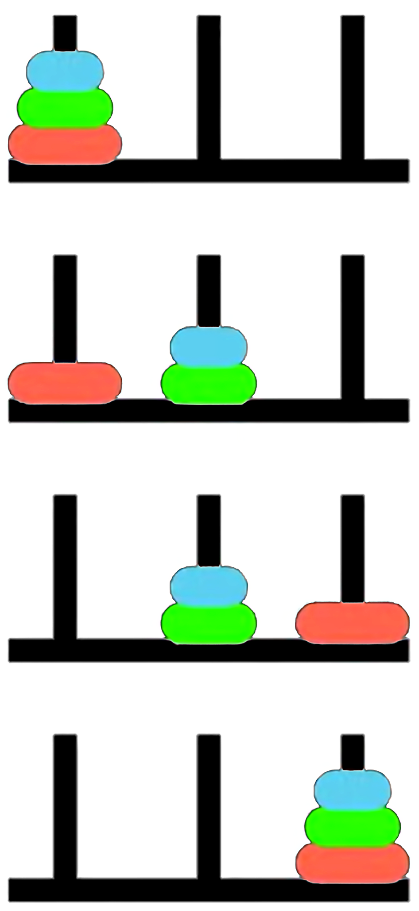

Synthetic Relativity: Tri-modality and the Fixpoint Semantics of the Logical Observer
The situation calculus
The situation calculus (Towers of Hanoi)

Fluents: \(\mathit{OnPeg}(d, p, s)\)
Initial Situation:
\[ \begin{align*} & \mathit{OnPeg}(D_1, Peg_1, S_0) \land \\ & \mathit{OnPeg}(D_2, Peg_1, S_0) \land \\ & \mathit{OnPeg}(D_3, Peg_1, S_0) \end{align*} \]
Actions: \(move(d, p_{from}, p_{to})\)
Goal: All disks on \(Peg_3\).
Why Towers of Hanoi?
- Naturally highly recursive, problem naturally decomposes into subproblems
- You learn how to solve it during search, for larger instances of \(n\)
Reiter’s Induction Axiom
The Foundational Induction Axiom: Second Order
\[ \forall P.\,[P(S_0) \land \forall a,s\,(P(s)\to P(do(a,s)))]\to \forall s\,P(s) \]
- Every valid situation is mathematically guaranteed to be a finite sequence of actions rooted at \(S_0\).
- Establishes the situation domain as an inductive datatype.
- Note that standard first order logic cannot enforce reachability due to the Compactness Theorem.
Situations & Actions

Initial situation: \(S_0\)
Step 1: \(do(move(D_1, Peg_1, Peg_3), S_0)\)
Step 2: \(do(move(D_2, \mathit{Peg}_1, \mathit{Peg}_2), do(move(D_1, Peg_1, Peg_3), S_0))\)
Step 3: \(do(move(D_1, C, B), do(move(D_2, \mathit{Peg}_1, \mathit{Peg}_2), do(move(D_1, Peg_1, Peg_3), S_0))\)
Step 4-: etc.
Situations as a Least Fixpoint
Let \(\mathcal{A}\) be actions and \(\mathcal{S}\) be the universe of situations. Define a monotonic operator \(\Gamma\): \[ \Gamma(X) = \{S_0\} \cup \{ do(a, s) \mid a \in \mathcal{A}, s \in X \} \]
- \(P(S_0) \land \forall a,s\,(P(s)\to P(do(a,s)))\) translates to \(\Gamma(P) \subseteq P\). Here, \(P\) is a pre-fixed point.
- \(\forall s\,P(s)\) asserts that the universe of situations \(\mathcal{S}\) is a subset of \(P\).
- The axiom states \(\mathcal{S}\) is a subset of every pre-fixed point, meaning it is bounded by their intersection.
The Knaster-Tarski Theorem: least fixpoint
The intersection of all pre-fixed points of a monotonic operator is its least fixpoint.
Therefore, the axiom enforces \(\mathcal{S} = \mu X.\Gamma(X)\).
Syntactic transformation to First Order Logic
Basic Action Theories [Lin and Reiter 94] define Theory \(\mathcal{D} = \Sigma \cup \mathcal{D}_{S_0} \cup \mathcal{D}_{Poss} \cup \mathcal{D}_{SSA} \cup \mathcal{D}_{UNA}\), where:
\(\color{blue}{\mathcal{D}_{S_0}}\): axioms describing the initial state of the fluents in \(S_0\)
\(\color{blue}{\mathcal{D}_{poss}}\): axioms describing the prerequisites of the primitive actions, of the form:
\[ Poss(A(\vec{x}), s) \equiv \Theta_A(\vec{x}, s), \]
one for each primitive action \(A\).
\(\color{blue}{\mathcal{D}_{ssa}}\): axioms describing the effects and non-effects of actions, of the form:
\[F(\vec{x}, do(a, s)) \equiv \psi_F(\vec{x}, a, s),\]
one for each fluent \(F\).
\(\color{blue}{\mathcal{D}_{una}}\): unique name axioms for the actions and objects, e.g. \(move(d_1, p_1, p_2) = move(d_2, p_3, p_4) \supset (d_1 = d_2 \land p_1 = p_3 \land p_2 = p_4)\), \((D_1 \neq D_2) \land (D_2 \neq D_3) \land (D_1 \neq D_3)\) and \((P_0 \neq P_1) \land (P_1 \neq P_2) \land (P_0 \neq P_2)\).
\(\color{blue}{\Sigma}\): some foundational domain-independent axioms, e.g. \(Smaller(d^{\prime}, d)\)
Action Precondition (Possibility) Axioms
\[ \begin{align*} Poss(move(d, p_{from}, p_{to}), s) \equiv \;& Disk(d) \land (p_{from} \neq p_{to}) \land OnPeg(d, p_{from}, s) \land \\ & \neg \exists d' \Big( Disk(d') \land Smaller(d', d) \land \\ & \big( OnPeg(d', p_{from}, s) \lor OnPeg(d', p_{to}, s) \big) \Big) \end{align*} \]
A solution to the frame problem (sometimes) [Reiter 91]
- Positive effect axioms:
- Negative effect axioms:
- Frame axioms:
- Completeness assumption (explanation closure):
\[ \neg OnPeg(d, p, s) \land OnPeg(d, p, do(a, s)) \supset \exists p_{from} \ (a = move(d, p_{from}, p)) \]
Successor state axioms \(=\) positive effect axioms \(+\) negative effect axioms \(+\) frame axioms \(+\) completeness assumption
Successor State Axioms
Suppose that for fluent \(F(\vec{x}, s)\):
\(\gamma_F^+(\vec{x}, a, s)\) encodes all positive effects; and
\(\gamma_F^-(\vec{x}, a, s)\) encodes all negative effects.
\[ \begin{align*} \gamma_{OnPeg}^+(d, p, a, s) \;&\stackrel{\text{def}}{=}\; \exists p_{from} \ (a = move(d, p_{from}, p)) \\ \gamma_{OnPeg}^-(d, p, a, s) \;&\stackrel{\text{def}}{=}\; \exists p_{to} \ (a = move(d, p, p_{to})) \end{align*} \]
So successor state axiom is:
\[ \begin{align*} OnPeg(d, p, do(a, s)) \equiv \;& [\exists p_{from} \ (a = move(d, p_{from}, p))] \lor \\ & OnPeg(d, p, s) \land \neg [\exists p_{to} \ (a = move(d, p, p_{to}))] \end{align*} \]
Syntactic Transformation: Regression (\(\mathcal{R}\))
The regression operator (\(\mathcal{R}\)) evaluates a query about a future state by pushing it backward in time.
It syntactically replaces a fluent evaluated at \(do(a, s)\) with the logically equivalent right-hand side of its Successor State Axiom.
\[ \mathcal{R}[{\color{blue}{F(\vec{x}, do(a, s))}}] \;\stackrel{\text{def}}{=}\; \gamma_F^+(\vec{x}, a, s) \lor {\color{blue}{F(\vec{x}, s)}} \land \neg \gamma_F^-(\vec{x}, a, s) \]
Instead of computing the physical state tree forward (building), the logic engine rewrites the future query into a question strictly about the preceding state \(s\).
- By repeating this recursively, any complex historical query is mathematically reduced to a simple database lookup against the initial state (\(S_0\)).
Towers of Hanoi Regression Example
Is \(D_2\) on \(Peg_2\) after we move \(D_1\) from \(Peg_1\) to \(Peg_2\)?
3. Evaluate using Foundational Axioms (\(\mathcal{D}_{una}\)): Because our Unique Names Axioms explicitly state \(D_1 \neq D_2\), both action equivalences mathematically evaluate to \(False\):
\[ \equiv \mathbf{False} \lor \color{blue}{OnPeg(D_2, Peg_C, S_0)} \land \neg \mathbf{False} \]
\[ \equiv \color{blue}{OnPeg(D_2, Peg_C, S_0)} \]
Reasoning about actions
\(\color{blue}{\text{Projection:}}\) given a sequence of actions \(s = a_1, \dots, a_n\), does condition \(\phi(s)\) hold?: \[ \mathcal{D} \models OnPeg(D_2, Peg_2, do(move(D_2, Peg_a, Peg_2), do(move(D_1, Peg_1, Peg_3), S_0))) \]
\(\color{blue}{\text{Planning:}}\) find a sequence of actions to make \(\phi(s)\) true (e.g., solve the puzzle): \[ \mathcal{D} \vdash \exists s .\ OnPeg(D_1, Peg_3, s) \land OnPeg(D_2, Peg_3, s) \land OnPeg(D_3, Peg_3, s) \land executable(s) \]
Property Persistence as a Greatest Fixpoint
Verifying universally quantified temporal queries (e.g., “property \(\phi\) persists indefinitely”).
- \(\color{blue}{\text{Inductive proofs:}}\) proving global invariants across all reachable states (e.g., a disk is never on two pegs at once): \[ \mathcal{D} \models \forall s .\ executable(s) \supset \forall d, p_1, p_2 .\ (OnPeg(d, p_1, s) \land OnPeg(d, p_2, s) \supset p_1 = p_2) \]
Property Persistence as a Greatest Fixpoint (continued)
The Single-Step Operator: This requires second-order induction. [Kelly & Pearce AIJ 2010] show how this can be obtained using a single step regression operator. It captures the condition for \(\phi\) holding now and being preserved after any single legal action via regression (\(\mathcal{R}\)):
\[ \Gamma(Z) \equiv \phi(s) \land \forall a \big( \textit{Poss}(a, s) \to \mathcal{R}[\, Z(do(a, s)) \,] \big) \]
Iteratively applying this meta-level calculation computes the maximal invariant without explicitly invoking the induction axiom.
- By wrapping the single-step regression operator inside a monotonic formula transformer, we evaluate the future back in the current state.
Greatest Fixpoint (\(\nu Z\))
- Property persistence is an infinite-horizon safety property.
- The persistence condition is the greatest fixpoint of this operator: \(\nu Z.\, \Gamma(Z)\).
The Categorical Observer & Coinduction
Induction builds and verifies finite situations from the “bottom up” (starting from the initial base situation \(S_{0}\) and progressing via the successor function \(do(a, s)\)).
Coinduction verifies infinite situations (histories) by observing ongoing sequences of actions from the “top down” (unfolding next states without ever reaching a final terminating state).
Coinduction in Towers of Hanoi

We can coinduce by observing the relative movement of the Sitcalc coordinates of \(\mathit{OnPeg}(d,p,s)\): \(\Delta p \equiv (p_{to} - p_{from}) \pmod 3\) of the smallest disk \(D_1\) (alternating with disk \(D_2\) or \(D_3\)).
Solving the puzzle of any size with an odd number of disks generates an infinite coalgebraic stream of spatial jumps:\[ ParityInvariant \equiv \nu Z.\ \langle -1 \rangle Z \]
Coinduction in Towers of Hanoi (continued)
This sequence initially generates a jump of \(+2\), so how can our Greatest Fixpoint survive this contradiction with \(-1\)?
While standard induction proves a base case and builds up, coinduction proposes a Greatest Fixpoint (an infinite rule) and verifies it locally step-by-step.
If an observation holds right now, and the rules guarantee it holds in the next step, the Greatest Fixpoint is guaranteed to hold forever.
\(\nu Z.\ \Gamma(Z)\) : The Greatest Fixpoint.
- “Define \(Z\) as the largest endlessly repeating stream satisfying the single-step operator \(\Gamma(Z)\), where here, \(\Gamma(Z) \equiv \langle -1 \rangle Z\)).
Stone Duality: Syntactic-Semantic Transformation
In category Theory, Stone Duality dictates a perfect, inverse mirror-image between Syntax (logical equivalence) and Semantics (topological state space).
Our coalgebra evaluates the topological future and discovers the physical branching of jumping right twice (\(+2\)) is completely indistinguishable from jumping left once (\(-1\)).
We enforce this Bisimulation Equivalence by injecting a logical cut:
\[ \forall \phi.\ \langle +2 \rangle \phi \;\equiv\; \langle -1 \rangle \phi \]
By syntactically equating these propositions, Stone Duality automatically forces the underlying semantic space to fold into a modulo-3 quotient ring (\(\mathbb{Z}_3\)).
This is our new syntactic transformation!
The Dual Problem: Algebras & Coalgebras
We use an endofunctor (\(F\)) over a state space (\(S\)) as a structural template that shapes our data. \(F(S)\) is simply the resulting combined data object.
- Algebra (SitCalc / Constructor): Morphism arrows point inward: \(\; F(S) \to S\)
- Our endofunctor shapes the input ingredients: \(F(S) = Action \times S\)
- The morphism evaluates to: \((Action \times State_{current}) \to State_{next}\)
- Concept: We combine pieces to construct a history from the bottom-up.
- Coalgebra (Property Persistence / Observer): Morphism arrows point outward: \(\; S \to F(S)\)
- Our endofunctor shapes the emitted data: \(F(S) = Observation \times S\)
- The morphism evaluates to: \(State_{current} \to (Observation \times State_{next})\)
- Concept: We take an opaque running state, break off a visible observation, and silently unfold the remaining state into the future.
Synthetic relativity axioms
Tri-modality & ternary representation
Standard provability logics like \(\mathrm{GLB}\) (Gödel-Löb Bimodal Provability Logic) rely on absolute binary provability: \(x R y\) assumes an absolute background space where \(y\) is provable from \(x\).
- In a ternary structure (drawing from Routley-Meyer semantics for substructural, relevance, and intuitionistic logics), you have a relation \(R(x, y, z)\).
- This allows us to decouple the synthetic transformation from the topological space. The ternary relation natively introduces the Observer’s frame. It reads: “Relative to reference frame \(x\), the accumulation of inductive evidence \(y\) yields the coinductively realised semantic limit \(z\).”
Synthetic Relativity Axioms over Total Category
Axiom 1: The Ternary Relational Axiom Logical entailment operates within a Total Category—a mathematically complete Stone Duality glues syntax and semantics together. This space is governed by three interacting modalities, evaluated relative to a specific baseline Reference Frame:
- \(S_f\) (The Base Frame / Context): The Reference Frame It provides the strict rules and symmetries over which the observer’s duality is constructed.
- \(\mathrm{RDo}\) (The Subproblem / Syntax): The Inductive Accumulator (\(\Box_1\)) Operates in constructive, non-Boolean logic. Recursively gathers finite, computationally observable properties (compact elements) along a directed logical path. \(\mathrm{RDo}\) is equivalent to the \(\Box\) modality of bimodal provability logic GLB: “There exists a finite, step-by-step mechanical proof of this property.”
- \(\mathrm{ODo}\) (The Master Problem / Semantics): The Limit/Creator Modality (\(\Box_2\)) The semantic evaluator and interval invariant. Performs topological closure—evaluating the directed set generated by \(\mathrm{RDo}\) and snapping it into a discrete, continuous limit. \(\mathrm{ODo}\) is equivalent to the \(\Box_\omega\) modality of GLB: “Evaluated at the continuous limit, this property is universally true,” i.e., this is the modality of semantic reflection.
- \(\mathrm{PDo}\) (Autonomous Progression): The Relativistic Engine (\(\Box_3\)) The dynamic transition functor. It acts as the mathematical engine of the Total Category, orchestrating the recursive interaction (categorical adjunction) of local syntax (\(\mathrm{RDo}\)) and global semantics (\(\mathrm{ODo}\)) relative to \(S_f\).
Constructive Accumulation & Realisation
Axiom 2: The Axiom of Constructive Accumulation Within a given reference frame (\(S_f\)), the Relativistic Engine (\(\mathrm{PDo}\)) iteratively drives the state forward, nesting inductive syntax (\(\mathrm{RDo}\)) and semantic coinductions (\(\mathrm{ODo}\)): \[ \mathrm{PDo}(S_r, S_o, S_f) \] \[ \mathrm{PDo}\big(\, \mathrm{RDo}(R_1, S_r),\; \mathrm{ODo}(O_1, S_o),\; S_f \,\big) \] \[ \mathrm{PDo}\Big(\, \mathrm{RDo}\big(R_2, \mathrm{RDo}(R_1,S_r)\big),\; \mathrm{ODo}\big(O_2, \mathrm{ODo}(O_1,S_o)\big),\; S_f \,\Big) \] \[ \mathit{etc.} \]
Theorem I: Semantic Realisation
Because this builds strictly upon finite verifiable observables, autonomous progression strictly halts when the topology reaches Algebraic Compactness. This is the moment of mathematical Realisation:
\[ \mu (\mathrm{PDo}) = \mathrm{ODo} \left( \bigsqcup_{i \in R} \mathrm{RDo}_i(\bot) \right) \]
- \(\bigsqcup \mathrm{RDo}\) (Syntax): The builder generates a raw, directed chain of evidence from the ground up. A syntax string alone has no inherent “meaning.”
- \(\mathrm{ODo}\) (Semantics): The top-down evaluator reads the syntax trace and evaluates its truth value.
Proof Sketch: Corresponds to the computation of the Kleene Fixed-Point Theorem.
- The ultimate stable fixpoint (\(\mu\)) is caught when \(\mathrm{ODo}\) evaluates the limit (Supremum, \(\bigsqcup\)) of iteratively applying the recursively enumerable inductive proofs (\(\mathrm{RDo}\)) from baseline ignorance (\(\bot\)).
- This realised limit acts as the interval semantic invariant.
The Synthetic Transformation
Axiom 3: The Transitivity Axiom Once Realisation is achieved, the relativistic reference frame shifts. The categorically preserved invariant (the semantic limit, \(O\)) becomes the new reference frame (\(S_f\)) for the next order of progression.
\[ \mathrm{PDo}(N, O, S_f) \longrightarrow \mathrm{PDo}(X, Y, \mathrm{O}) \]
- Left Side: The fully realised state within the initial reference frame (\(S_f\)).
- The Arrow (\(\longrightarrow\)): The Synthetic Transformation (Topological closure and Change of Base).
- Right Side: A new, higher-order autonomous progression begins. The complex limit \(O\) has mathematically synthesised into an atomic, discrete baseline coordinate for the new subproblem (\(X\)).
Theorem II: Relativistic Invariance (Preserving the Interval)
Proof Sketch: Category theory mathematically guarantees that under this Transitivity shift (a geometric morphism), the overarching semantic truth-value and geometric integrity of the realised limit (\(O\)) are strictly and losslessly preserved across the Change of Base.
Towers of Hanoi example
1. Local Unrolling (Building the Situation Trace): The engine recursively accumulates primitive actions (moving disks), generating the topological equivalent of a nested \(do()\) sequence:
\[ \mathrm{PDo}\Big(\, \mathrm{RDo}\big({\color{blue}{\text{move}(D_1, P_2)}}, \dots S_f\big),\; \mathrm{ODo}\big(O_{\text{target}}, \text{Goal}\big),\; S_f \,\Big) \]
2. Limit Catching: Through top-down semantic reflection (\(\Box_\omega\)), the \(\mathrm{ODo}\) modality mathematically coinduces a structural property of the optimal traces: The Parity Invariant (\(O_{\text{parity}}\)).
3. The Synthetic Transformation (Change of Base): The Transitivity Axiom fires, executing a categorical Change of Base:
\[ \mathrm{PDo}(N_{\text{trace}}, {\color{blue}{O_{\text{parity}}}}, S_f) \longrightarrow \mathrm{PDo}(X, Y, {\color{blue}{\mathrm{O_{\text{parity}}}}}) \]
The invariant (cycle \(D_1\), alternate move, cycle \(D_1\)) emerges as the unique, strictly positive proof path through the state space.
The new parity invariant shifts to become the Reference Frame. By adopting this rule as a lifted axiom, the search tree branching factor strictly collapses from 3 down to 1.
Note computational complexity of problem doesn’t change, \(O(2^n)\) for \(n\) disks, but where the computational effort is spent between a classical recursive approach versus Synthetic Relativity autonomous theory progression.
The Dual Fixpoints
Unifying Reachability (\(\mu\)) and Persistence (\(\nu\))
By natively intertwining syntax (\(\mathrm{RDo}\)) and semantics (\(\mathrm{ODo}\)), the Relativistic Engine mathematically fuses two distinct forms of logical progression:
- Induction / Least Fixpoint (\(\mu\)): Governed by the \(\mathrm{RDo}\) modality. The bottom-up synthesis of finite evidence from baseline ignorance (\(\bot\)). It guarantees computational Reachability.
- Coinduction / Greatest Fixpoint (\(\nu\)): Governed by the \(\mathrm{ODo}\) modality. The top-down evaluation of continuous semantics. It guarantees Safety and Property Persistence.
Algebraic Compactness (\(\mu = \nu\)) Theorem I (Semantic Realisation) formally computes a Bilimit. At the coordinate of convergence, the active inductive trace (\(\mu\)) perfectly fulfills the persistent semantic invariant (\(\nu\)).
When this limit shifts to become the new Reference Frame (\(S_f\)) via the Transitivity Axiom, Theorem II guarantees it acts entirely as a Greatest Fixpoint—a persistent, assumed law of physics for all subsequent computations, natively solving the Frame Problem.
Theory-Driven Generalization via Categorical Duality
Instead of relying on algorithmic heuristics (e.g., IC3 or Interpolation) to guess invariants, the system treats generalisation as a native categorical operation over its Reference Theory (\(S_F\)). We reframe invariant proposal through the foundational duality of fibrations and adjunctions.
- 1. Change of Base (The Fibrational Shift)
- In categorical logic, logical properties form a Total Category fibered over a Base Category of physical states.
- The system performs a mathematical Change of Base from the absolute physical space (\(ODo\)) to the relativistic space (\(RDo\)). This functor maps complex, absolute histories into simplified, periodic differential streams.
- 2. Adjoint Duality (Swapping the Problem)
- Generalising a safe invariant is structurally identical to the problem of deductive planning, simply with the functors reversed (an Adjunction: \(Left \dashv Right\)).
- Planning (Left Adjoint): Inductive, bottom-up synthesis of a finite trace (Least Fixpoint).
- Generalising (Right Adjoint): Coinductive, top-down projection of an infinite bound (Greatest Fixpoint). The finite local observations mathematically push across the adjunction to form the exact coinductive proposal.
- 3. Universal Properties (Terminal Coalgebras)
- The system requires no external engineering templates or “Syntax-Guided” rules.
- Because \(S_F\) natively defines the geometric symmetries of the domain, the coinductive proposal emerges organically as a Universal Property (specifically, a Terminal Coalgebra). Stone Duality ensures that the logical syntax automatically folds to perfectly bound the state space’s innate topology.
Synthetic Relativity Logic
Domain Theory in Logical Form (Syntax versus Semantics)
To execute our modalities, we require an architecture that natively fuses classical (inductive) logic with intuitionistic (coinductive) logic. We ground our system in Abramsky’s DTLF (1991), based on an intuitionistic construction of truth.
- Baseline Ignorance (\(\bot\)): Computation initiates at Bottom (\(\bot\))—the mathematical coordinate of zero information.
- Compact Elements (Finite Observability): Basic propositions serve as atomic, observable quanta. In DTLF, logical formulas correspond directly to compact elements, meaning any verified property must be confirmable in finite time.
- Directed Accumulation (\(\sqsubseteq\)): Knowledge grows monotonically. The logic is strictly positive and constructive, meaning once an observation is verified, it establishes an upward, directed path toward the limit without retraction.
The Incompleteness Boundary: Logic remains classically monotonic locally. However, due to relative incompleteness (Gödel’s Incompleteness & Beklemishev’s reflection principles), a static system cannot resolve global limits. The observer must step outside the local system.
The DTLF Logical Primitives
In this framework, formulas do not describe static states; they describe observable properties as they unfold. The core syntactic building blocks you need are:
- \(X, Y\) (Variables): Placeholders used to define recursive logical properties.
- \(\top\) (True): The baseline trivial observation (meaning a transition occurred and the system did not crash).
- \(\phi \land \psi \ / \ \phi \lor \psi\) (Conjunction / Disjunction): “I simultaneously observe both \(\phi\) and \(\psi\)” / “I observe either \(\phi\) or \(\psi\).”
- \(\langle \delta \rangle \phi\) (The Coalgebraic Transition Modality): This is the literal “arrow breaking in two.” It reads: “The system makes a visible relativistic jump of \(\delta\) (where \(\delta \in \mathbb{Z}\)), and the continuing, unobserved future stream will satisfy property \(\phi\).”
- \(\nu X.\ \Phi(X)\) (The Greatest Fixpoint / Co-induction Operator): The primitive for co-induction. It binds a variable \(X\) to define a recursive, infinite behaviour. It reads: “Define property \(X\) as the largest possible, endlessly repeating stream that continuously satisfies the rule \(\Phi(X)\) forever.”
Example: Computing the Hanoi Parity Invariant
We can now express our hypothesis for the Towers of Hanoi natively in DTLF. We want to co-induce an idealised invariant where the smallest disk flawlessly cycles one peg to the right (\(+1\)) forever.
1. Proposing the Idealised Rule: We propose this continuous property as our Greatest Fixpoint:\[ \nu X.\ (\langle +1 \rangle X \lor \langle -2 \rangle X) \;\equiv\; \nu X.\ \langle +1 \rangle X \]
Spatial Completeness & The Static Limitation
The mathematical power of vanilla DTLF lies in Spatial Completeness (rooted in Stone Duality).
- The Guarantee: It proves a 1-to-1 isomorphism between the algebraic, step-by-step Syntax (\(\phi \vdash \psi\)) and the continuous, geometric Semantics (\([\![\phi]\!] \subseteq [\![\psi]\!]\)).
- Catching Limits: Computations resolve when the directed path of finite evidence mathematically catches (satisfies) an infinite continuous topological limit (a Supremum).
Vanilla DTLF perfectly describes a single, static universe. However, to differentiate induction from coinduction and model dynamic, continuous learning, the Reference Frame itself must dynamically shift.
Translating Continuous Syntax into Successor State Axioms
1. Sidestepping the Frame Problem (SSA vs. R-DTLF)
- SitCalc SSA (Global Tracking): Evaluates the entire history (\(s\)) across rigid Successor State Axioms:
\[\mathit{On}(d, p, do(a, s)) \equiv a = \text{move}(d, p) \lor \big( \mathit{On}(d, p, s) \land \neg \exists p'. a = \text{move}(d, p') \big) \]
- R-DTLF (Local Entailment): Operates purely on verifiable observables. Irrelevant global variables are topologically invisible (no frame axioms are computed during unrolling):
\[ \mathrm{RDo}\big(\text{move}(d, p), S_f\big) \vdash \mathit{On}(d, p) \]
2. Endogenous Code Generation (Compiling the Precondition) Once \(O_{\text{parity}}\) is realised, the engine autonomously exports the invariant into a discrete classical Action Precondition Axiom (\(\mathit{Poss}\)) for the new baseline:
\[ \mathit{Poss}_{\text{new}}(\text{move}(d, p), s) \equiv \mathit{Poss}_{\text{old}} \land \mathrm{\big(d = D_1 \leftrightarrow \text{LastMoved}(s) \neq D_1\big)} \]
By autonomously synthesising this SSA, the logic enforces deterministic execution.
Bridging Worlds: Endogenous Logic Compilation
R-DTLF does not discard classical logic; it functionally generates it at the semantic limits.
Theorem III: Topological Booleanization (Compiling Successor State Axioms)
Upon semantic realisation, the continuous intuitionistic trace generated by \(\mathrm{RDo}\) can be losslessly compiled into a discrete, classical First-Order baseline via the Lawvere-Tierney Double Negation (\(\neg\neg\)) Topology.
Proof Sketch: Topos theory formally guarantees that inside every fluid, intuitionistic space exists a rigid Boolean sub-lattice that can be safely projected onto.
- Compiling Successor State Axioms (SSAs): This geometric compression is mathematically homologous to Ray Reiter’s Explanation Closure. The Relativistic Engine acts as an endogenous logic compiler—synthesising complex discovered invariants directly into rigid First-Order logical rules.
- Hybrid Execution: Because of this formal theorem, we can securely export newly learned R-DTLF heuristics directly into standard classical Basic Action Theories (BATs). This allows R-DTLF to handle complex structural learning, and legacy solvers (like Golog).
Comparison
Comparison
| Feature | Standard Situation Calculus (The “Building” Frame) | Synthetic Relativity (The “Observing” Frame) |
|---|---|---|
| Objective | Historical Reachability / Action Execution | Property Persistence / Safety Guarantees |
| Conceptual Math | Least Fixpoint (LFP) | Greatest Fixpoint (GFP) |
| Logical Foundation | Second-Order Induction (Algebraic) | Co-induction (Coalgebraic) |
| Syntactic Shift | Transformation into First-Order Logic (SSAs) | Transformation to Relativistic Differentials |
| Computation Engine | Computed as LFP in the \(Do\) modality (Golog) | Computed in the R-DTLF logic |
| Resolution Engine | First-Order Theorem Proving | Bisimulation Equivalence (Quotients) |
Synthetic Relativity versus Situation Calculus versus GLB
| Aspect | Synthetic Relativity (R-DTLF) | Situation Calculus (BATs/SSAs) \(+\) variants of \(\mu\)-calculus | Bimodal Provability logic (GLB) |
|---|---|---|---|
| Modalities | \(\mathrm{RDo}\), \(\mathrm{ODo}\) & \(\mathrm{PDo}\) | \(\mathrm{PDo}\), \(\langle a \rangle \phi\) (possibility), \([a] \phi\) (necessity) | \(\Box\), \(\Box_\omega\) |
| Ordering | Sequences of finite Posets, non-unique predecessors, non-well ordered | Successor function, Unique predecessors, non-well ordered | Transfinite ordinality: limits, Non-unique predecessors, well-ordered |
| Completeness? | Spatially complete (continuous geometry) and Turing complete (universal computation via recursive domains); Arithmetically incomplete (triggers Gödel’s incompleteness). | Turing complete (can compute anything), but neither spatially complete (no continuous geometry) nor arithmetically complete (subject to Gödel’s incompleteness). | Arithmetically complete (flawlessly models the bounds of provability), but neither Turing complete (strictly decidable, cannot compute loops) nor spatially complete. |
| Other | Algebraic compactness. Kleene’s Realizability & BHK (Brouwer-Heyting-Kolmogorov) Interpretation. | Regression Theorem (solves the frame problem). Fixpoint Semantics & Knaster-Tarski Theorem. | Japaridze’s Arithmetical Completeness Theorem. Löb’s Theorem & Well-founded Kripke Semantics. |